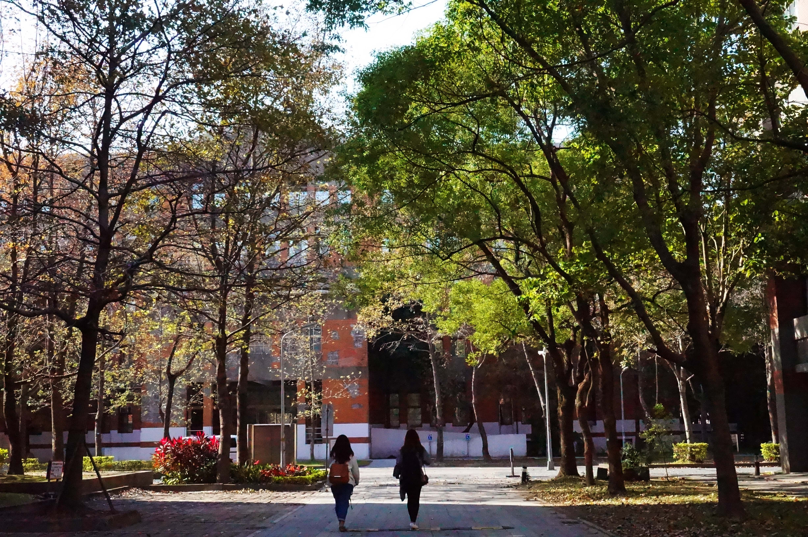

National Taiwan University
2011-2015
NTU is the most prestigious college in Taiwan, and I think it's also one of the most beautiful schools in this island. Keeping tracing its beauty becomes one of my habits in my student years. You can have a deep insight into this gorgeous campus through these images.
台大有不輸國外大學的美景，而大學這四年我也很樂於捕捉這些影子。 三月杜鵑、四月流蘇、椰林大道與藍天、楓香道的秋紅... 更勝於一切風景的莫過於回憶了。 照片列裡真正只有景的照片可能不算多，但帶著我們生活的足跡，希望你也能看到台大不一樣的角落。
Having experienced for four years in NTU, seeing its four seasons every year, and leaving my footprint every inch in this campus, makes me deeply love this fascinating school.
Maybe it's because my memories here adding colors to my photos.
The following gallery shows NTU campus through my eyes, not only scenery, but also people I met here. Hope you can enjoy these photos with a NTU student view.
在大學的生活裡，看過四年的春夏秋冬，走過校園內的大小角落，深深覺得台大是所很美的學校。
或許在期間的回憶才更讓我的感觸增加了不少色彩。
回顧這些照片，我想我們可以找回那些相處過的種種；也或是僅止於欣賞在2011到2015年間，這所學校被記錄下的美。
